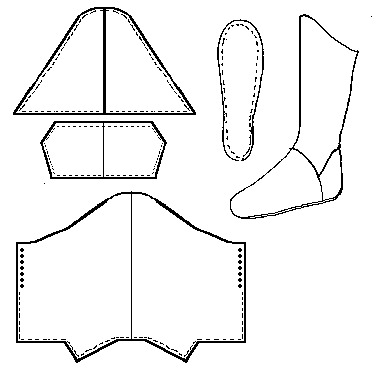

Khuff
Persian Boots (Late 12th/Early 13th Century)
Based on material in Osprey's
Saracen Faris, and so may not be wholly accurate. By the same token, the basic design is MY estimate of the pattern, and may not accurately reflect the author's original intent.
The Khuff Boots are made from soft leather, and are therefore usually worn with gaiters or protective leggings.
- The sole should be made 1.5 cm wider than the outline of the foot. The vamp will be a slightly different size and shape than with others in this document, so it is even more important to make a test version.
- Soak the sole in water for a minimum of 1/2 an hour (the longer the better, a day is not too long).
- The sole is shaped to wrap up outside the upper at the seam. this is done by gathering it carefully, as though for a "pucker" shoe, making certain that it fits around the foot.

- Then attaching the upper around the gathered sole to hole it in place.
- The back seam is only sewn part of the way up the back, the rest being laced into place.
Return to
[Index] or
[Next]
Footwear of the Middle Ages - Historical Shoe Designs/Number 44, by I. Marc Carlson. Copyright 1996
This page is given for the free exchange of information, provided the Author's Name is included in all future revisions, and no money change hands, other than as expressed in the Copyright Page.